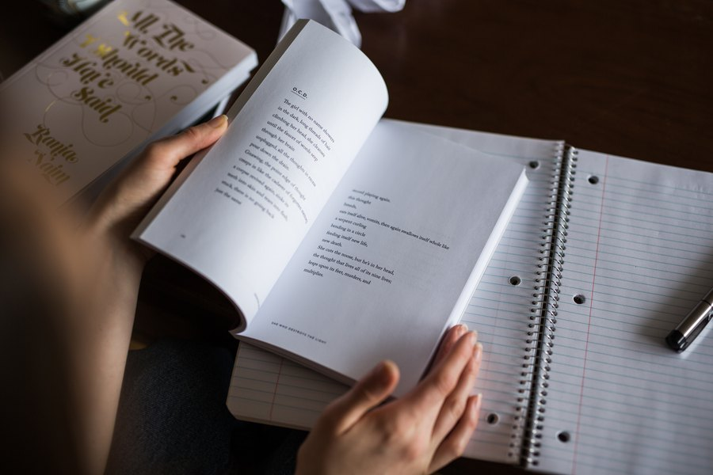

Reading and Brain Health: What Books Do for Your Memory
Reading is one of the few activities that simultaneously taxes language, attention, working memory, and imagination. Here's what the science says about how it protects the brain over time.

Key takeaways
- Reading is cognitively demanding in a good way: it exercises attention, language, working memory, and inference simultaneously.
- Frequent readers show slower cognitive decline in longitudinal studies, though the causal direction is still debated.
- Fiction and nonfiction offer different benefits — social cognition from stories, knowledge and vocabulary from nonfiction.
- 15 to 30 minutes a day appears sufficient to see benefit. Consistency matters more than marathon sessions.
- Reading pairs well with sleep: reading before bed can ease the transition into deep sleep, which is when memories consolidate.
If you're looking for a way to keep your brain sharp that doesn't involve a gym membership or a complicated supplement stack, reading is a reasonable place to start. Regular readers tend to score better on cognitive tests and show slower age-related decline, according to several large observational studies. The question worth asking: is reading actually protecting the brain, or do cognitively healthier people just happen to read more? The honest answer is that we don't have a clean controlled trial proving causation. What we do have is a growing body of evidence suggesting the relationship is real. Here's what it shows, and what kind of reading appears to matter most.
What does reading actually do to the brain?
Reading is not a passive activity, even when it feels like one. Your brain is simultaneously decoding visual symbols into language, holding earlier sentences in working memory to make sense of current ones, predicting what comes next, and constructing a mental model of the content. That's a lot of parallel processing. Neuroimaging studies show that reading activates not just the visual cortex and language areas, but also regions associated with movement, sensation, and emotion, depending on what's being described. Reading "the coffee was bitter" activates taste-related brain regions. Describing a character running engages motor circuits. This whole-brain engagement is part of what makes reading different from watching video on a screen, where most of the sensory processing is done for you.
Does reading slow cognitive decline?
The most compelling data comes from longitudinal studies that follow older adults over years or decades. A widely cited analysis of the Rush Memory and Aging Project tracked participants over an average of six years and found that frequent cognitive activity, including reading, was associated with a 32% slower rate of memory decline. A separate study published in Neurology found that people who reported high levels of cognitive activity throughout their lives had significantly less amyloid plaque accumulation, one of the hallmarks of Alzheimer's disease. What researchers often describe as "cognitive reserve" may be relevant here. The brain, like a muscle, appears to build some degree of resilience through regular, demanding use. Reading is one of the more accessible ways to provide that demand.
That said, these are observational findings. Healthy, educated people tend to read more, and those same factors also independently protect brain health. Researchers try to control for education and baseline cognition, but confounding is difficult to eliminate entirely. Treat the evidence as encouraging rather than definitive.
Fiction vs. nonfiction: does it matter what you read?
Research suggests the two formats offer somewhat different cognitive benefits. Fiction, especially literary fiction that features complex characters and ambiguous social situations, appears to strengthen what psychologists call "theory of mind." That's the ability to model other people's mental states, intentions, and emotions. Studies led by psychologist David Comer Kidd at the New School for Social Research found that reading literary fiction (compared to genre fiction or nonfiction) produced measurable short-term improvements in theory-of-mind tasks. This matters for brain health because social cognition, the ability to understand and engage with other people, involves prefrontal and temporal brain networks that also support memory and executive function.
Nonfiction reading, on the other hand, builds vocabulary, domain knowledge, and the ability to follow a complex argument across many pages. Both matter. The brain doesn't benefit from reading a narrow strip of material any more than a body benefits from doing a single exercise. Variety is the more sensible goal.
COMPLEX
The memory formula we rate highest in 2026
Reading and other cognitive activities work best alongside the right nutritional foundation. Advanced Memory Complex pairs citicoline, bacopa, phosphatidylserine, and B-vitamins with a 60-day guarantee.
See Today's Price →How much reading is enough?
There's no established clinical dose for reading the way there is for exercise. The observational data suggests that even modest amounts of regular reading, around 15 to 30 minutes per day, are associated with meaningful differences in long-term cognitive outcomes. What seems to matter more than duration is consistency and engagement. Skimming headlines doesn't provide the same sustained cognitive load as following a book-length argument or a complex plot over many chapters. Long-form reading is what most of the research is actually measuring.
Reading before bed offers an additional indirect benefit: it reliably reduces physiological arousal and accelerates the transition into sleep. Since deep sleep is when the brain consolidates the day's memories into long-term storage (see our guide to sleep and memory), anything that protects sleep quality indirectly protects recall. This might be one of the underappreciated mechanisms behind reading's cognitive benefits.
Physical books vs. e-readers: is there a difference?
A handful of studies have compared comprehension and retention between physical books and e-readers. The results are mixed. Some researchers have found that physical book reading correlates with slightly better text retention, which they attribute to the spatial and tactile cues a physical book provides (you can "feel" where you are in the narrative). Others find no meaningful difference. Scrolling on a phone, however, appears to fragment attention in ways that sustained book reading doesn't. If you're reading on a device, a dedicated e-reader without notification distractions is probably closer to physical book reading than a phone with social apps nearby.
The more important variable is whether you're actually reading versus scrolling. Passive consumption of short-form content doesn't appear to provide the same cognitive benefits as sustained reading of longer material. The attention is the point.
Reading as part of a broader brain-health approach
Reading is a good habit. It's also not a complete strategy on its own. The most protective thing you can do for your memory is to combine cognitive activity, regular physical exercise, quality sleep, a brain-supportive diet, and meaningful social connection. Each of these inputs addresses different aspects of brain health, and they tend to compound rather than substitute for each other. For a full rundown of what the research supports, see our guide to how to improve your memory.
If you want to add structure to the reading habit, a few practical approaches have some research backing. Reading clubs and book groups add the social element, which carries its own cognitive benefit. Taking brief notes on what you've read, even just a sentence or two, engages retrieval practice, one of the best-studied memory techniques. And alternating fiction and nonfiction gives you the breadth that appears to matter for overall cognitive engagement.
Some people ask whether audiobooks count. The evidence is thin, but listening to a complex narrative does engage language processing, attention, and mental modeling. It's not identical to reading, and retention studies tend to favor reading for factual content, but for people who can't read comfortably due to vision or learning differences, audiobooks appear to be a reasonable substitute.
Should you read to protect against dementia?
Reading will not prevent Alzheimer's disease. That framing overstates what the science supports and should be avoided. What the research does suggest is that cognitively active people, including those who read regularly throughout their lives, tend to show fewer functional symptoms of cognitive decline even when their brains carry some degree of pathological change. The theory is that cognitive reserve, built up through decades of mental engagement, gives the brain more redundancy to draw on as age-related changes accumulate. Reading is one of the more accessible and pleasant ways to build that reserve. It works alongside other interventions like regular exercise and brain-training activities, not instead of them. Always consult your physician if you have concerns about memory or cognitive change.
Frequently asked questions
Does reading improve memory?
Research suggests regular reading is associated with slower cognitive decline and a larger vocabulary. It demands sustained attention and working memory, which are real cognitive demands. Whether it directly improves recall the way exercise does is less clear, but the evidence for its protective role is encouraging.
How much reading per day is good for the brain?
Even 15 to 30 minutes of focused reading daily appears beneficial in observational studies. Consistency matters more than duration. Reading before bed also has the bonus of winding down the nervous system, supporting the deep sleep your brain needs for memory consolidation.
Is reading better for the brain than watching TV?
Research comparing the two suggests reading demands more active cognitive engagement, including language processing, inference, and sustained attention. Passive video watching engages fewer of these systems. Educational video content is not the same as mindless scrolling, but long-form reading appears to be the more demanding activity.
What type of reading is best for brain health?
Long-form reading, whether fiction or nonfiction, appears to provide more benefit than short-form content. Fiction has been linked to improved social cognition, and nonfiction builds vocabulary and domain knowledge. Mixing both is probably the most sensible approach.
Building a brain-healthy routine?
Reading is a great start. Pair it with the right nutritional support and see the memory formulas our editors rate highest for 2026.
See the Top 5 Memory Formulas →Related: Exercise and brain health · Brain games for adults · Sleep and memory · Best memory formulas of 2026